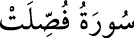

<a name=7858></a><br/>
<b>41- FUSSİLET SÛRESİ</b><br/>
<i><b>Adını, üçüncü âyette geçen </b></i><br/>
<i><b>“Fussilet” kelimesinden almıştır. </b></i><br/>
<i><b>“Secde”, “Hâ, Mîm” ve “Mesâbih” adları ile de </b></i><br/>
<i><b>anılan bu sûre, Mekke’de inmiştir ve 54 âyettir.</b></i><br/>
